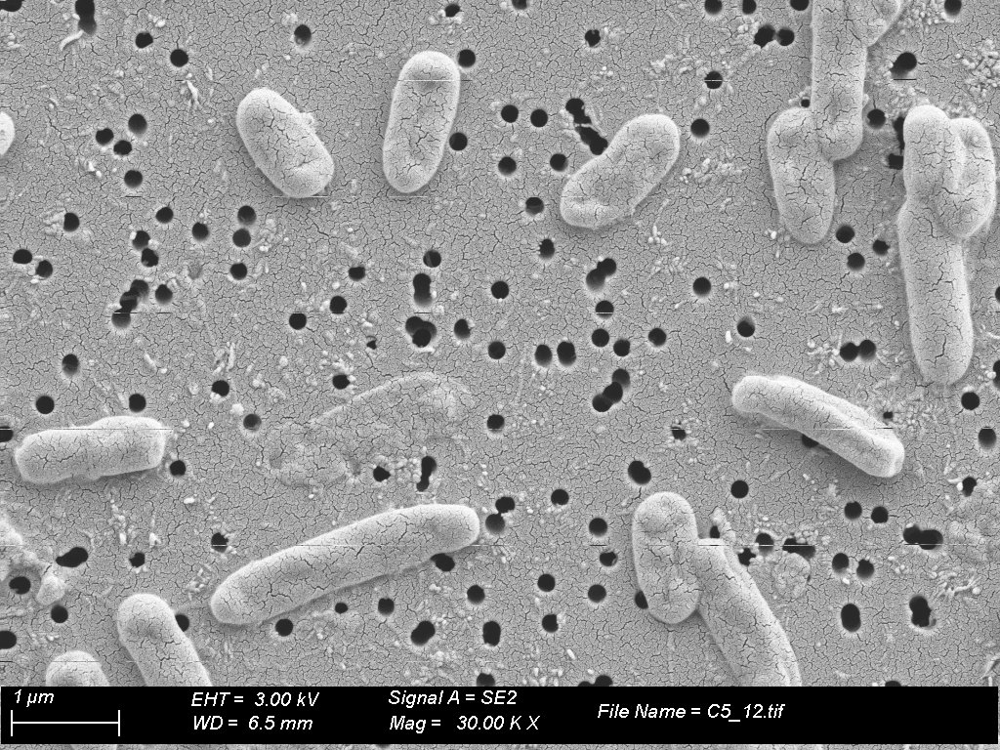

Despite being a person who admires art and lives from science, it wasn't until years after starting my career that I could identify patterns they shared and that I found striking. I dreamed of being an art microbiologist, a bit like a restorer, I learned about the living art of bacteria on agar and was told the story of the periodic table and the law of octaves.
"The Law of Octaves"
Long before modern quantum mechanics explained electron orbitals, the chemist John Newlands noticed something interesting in the 19th century. By ordering the known elements by their atomic mass [5], he noticed that their chemical and physical properties repeated every eight elements. It was exactly the same pattern as a Western musical scale. Just as the eighth note starts a new harmonic cycle (Do, Re, Mi, Fa, Sol, La, Si, Do), the eighth chemical row started a cycle of elements with similar behaviors. Although at the time many dismissed his "Law of Octaves", this musical principle was the compass that marked the beginning of the path to the final structure of Dmitri Mendeleev's table.
"These examples still impress me because many times I have managed to understand science by comparing it with something I know and vice versa."
This relationship prevails today, there are projects, like those supported by the American Chemical Society [1], that take this connection to "sonification" [8]; with which scientists have managed to convert the light spectrum [3] or the vibrational frequencies of molecules into audio frequencies. Thanks to this, we no longer just imagine atomic models; now we can "hear" what the internal structure of gold, carbon or proteins sounds like.



Music is not the only artistic manifestation hidden in science. In fact, the border between both disciplines is profoundly blurred. I think of the first time I saw images from scanning electron microscopy (SEM) [7] and transmission (TEM) [9]; they immediately revived my passion for photography and painting. Sitting down to process these images with tools like Fiji [4], to quantify the sample, it is inevitable to notice that the results are not just empirical data. Cellular networks or singular bacterial structures form compositions of astonishing natural beauty, worthy of a contemporary art museum. We have seen this connection throughout history: from Da Vinci's anatomical notebooks to Ramón y Cajal's fascinating drawings of neurons, demonstrating that art has always been the tool par excellence to observe and understand life.
With BioArt [2] being another peculiar example, where microorganisms, such as bacteria or yeast, are cultivated in Petri dishes [6] to create living paintings.
Art helps us visualize science, but who decides how we interpret that reality? If science gives us the data – the how – and art gives us the expression, who gives us the why? This leads us to a much deeper question, a historical issue that has shaped our thinking.
But that dispute... we will address it in the next article.
Glossary
- [1] American Chemical Society (ACS): One of the world's largest and most important scientific societies, dedicated to supporting research, education, and outreach in the field of chemistry. ↩ back
- [2] BioArt: An art movement that fuses art with biology, using living matter (bacteria, cellular tissues, organisms) and scientific methodologies as its main creation materials. ↩ back
- [3] Light spectrum: The distribution of light energy into different waves. In chemistry, it is used to identify what materials are composed of by observing how they interact with light. ↩ back
- [4] Fiji: An open-source software platform (based on ImageJ) focused on the analysis and processing of scientific images. It is an indispensable tool in the laboratory to quantify visual microscopy data. ↩ back
- [5] Atomic mass: The total mass of protons and neutrons in a single atom. It was the first metric used by 19th-century chemists to attempt to order known elements. ↩ back
- [6] Petri dish: A cylindrical glass or plastic container, with a lid, essential in microbiology. It is used to contain the culture medium (such as agar) where microorganisms grow. ↩ back
- [7] SEM (Scanning Electron Microscopy): A microscopy technique that uses an electron beam to scan the surface of a sample. It generates ultra-high-resolution three-dimensional images that reveal the topography and external texture of cells or materials. ↩ back
- [8] Sonification: The process of transforming data, images, or physical phenomena (such as the vibrations of a molecule) into sound and audio frequencies perceptible to the human ear. ↩ back
- [9] TEM (Transmission Electron Microscopy): A technique that fires an electron beam through an ultra-thinly cut sample. It allows observing internal structures (such as cell organelles) with an almost atomic level of detail. ↩ back
Back to Blog